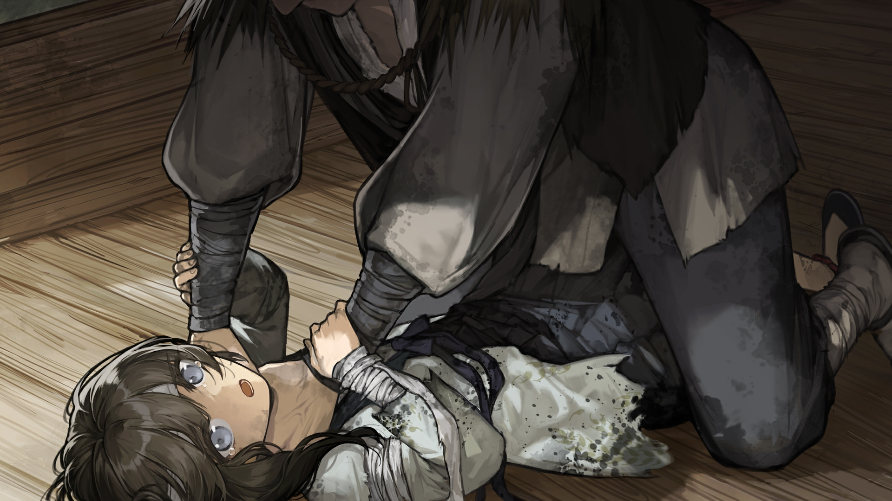

良 第九章：选择
返回
满穗配音
良爷
我们先去买什么
我没有啊良爷选自己喜欢吃的就好
唔这么一想的话有一个东西很想吃如果良爷看到番薯的话就买一个吧
那我教你哦番薯是海外来的稀罕货吃了能长寿
我爹爹
良爷要不牵一下我的手吧
不知良爷注意到了没，总有人在看我们
良爷看起来比我大十几岁若不像父女一样手牵手容易被人怀疑
良爷你看那里有馒头铺
我也要肉馅的
良爷在京城的时候吃过肉馒头吗
那见过万岁爷吗
京城和陕州比是什么样的
嗯真的差不多肯定还有些别的地方不一样吧
嘿嘿谢谢伯伯
嗯本来就不好找当时是爹爹好不容易才搞到的估计早就没得卖了
等一下良爷你忘了还有东西要买
影子戏的东西
良爷这套锣鼓卖两百文你觉得贵不贵
戏班子当时为什么要当掉锣鼓呀
戏班的人不唱戏那会去干什么
我不知道是从我爷爷那一辈转的爹爹没跟我讲过
对了良爷有件事想问一下你
当东西都是为了卖钱吗
良爷昨晚你和兴爷是不是吵架了
我着我昨天没睡着迷迷糊糊地就听见良爷找兴爷去谈话回来后良爷一直都睡不像是有心事
良爷莫怪我就是好奇你们昨晚到底说了什么呀
我不明白良爷和兴爷到底谁是老大
那你们感情很好吗是拜把子的兄弟吗
那我觉得良爷不必只是听他的好像他是老大一样
之前洗澡的时候良爷提过京城爆炸的事
我知道那件事之后良爷可能觉得有些事都是老天定的人怎么做没用但我觉得不是这样的
良爷你可以做出自己的选择
良爷我有要事跟你说
这里说话不方便我们得换个地方聊
良爷大事不好了
兴爷马上要杀你
刚才琼华跟我说兴爷趁我们买菜的时候将她们锁在门里半个时辰后才回来
肯定不对
兴爷很谨慎按理说该一直看着她们不让她们跑了但是他刚刚却没有那么做
半个时辰显然不是要去解手或者去拿什么东西他大概是出了客栈去了某个地方找某人聊了些什么
我觉得没那么简单他若是见朋友为何不像之前一样告诉良爷
刚才我听兴爷和良爷似乎在隔壁吵着什么
我听不清但隐约听到兴爷最后开了门喊着要去拿酒
良爷那个酒一定不能喝一定是下了药
你不要轻易相信兴爷他肯定
我我不想骗良爷是兴爷想骗良爷
兴爷一直都在骗良爷刚刚良爷吃完先上楼时兴爷就拿了包裹翻着什么是蒙汗药
呜良爷救我